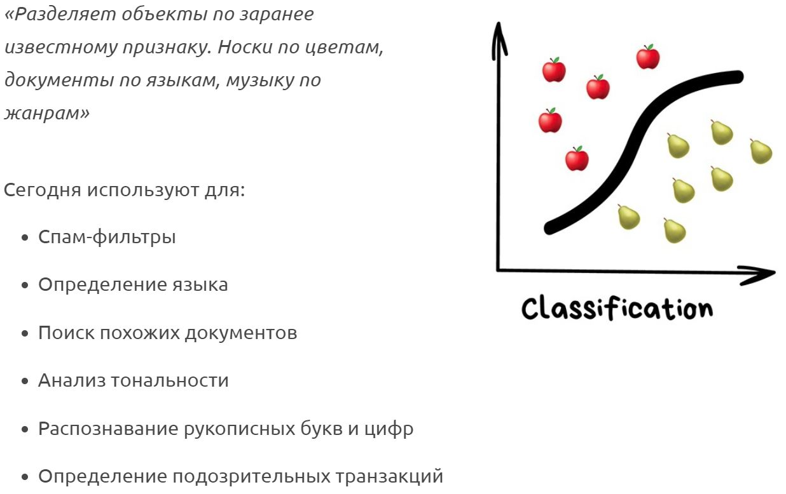
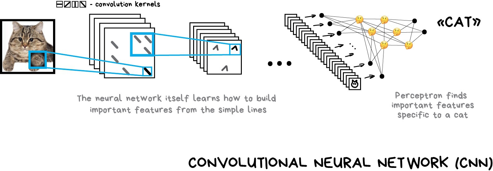

Machine Learning (overview)
By Valeriy Beskhmelniy
AI ⊂ ML ⊂ NN ⊂ DL
Зачем же нам Машинное Обучение?
Machine Learning

Основные разделы Машинного Обучения
- Классическое машинное обучение (Classical ML)
- Обучение с подкреплением (Reinforcement Learning)
- Ансамблевое обучение (Ensembles Learning)
- Нейронные сети (Neural Networks)
Классическое машинное обучение (Classical ML)
Когда используется:
- Есть данные
- Данные простые
- Признаки понятные
Обучение с учителем
Классификация
Популярные алгоритмы:
Регрессия
Популярные алгоритмы:
Обучение без учителя
Кластеризация
Популярные алгоритмы:
Обобщение (Уменьшение Размерности)
Популярные алгоритмы:
Поиск правил (ассоциация)
Сегодня используют для:
- Прогноз акций и распродаж
- Анализ товаров, покупаемых вместе
- Расстановка товаров на полках
- Анализ паттернов поведения на веб-сайтах
Популярные алгоритмы:
Обучение с подкреплением (Reinforcement Learning)
Когда используется:
- Данныx нет
- Есть среда с которой можно взаимодействовать
Обучение с подкреплением
Популярные алгоритмы:
Ансамблевое обучение (Ensembles Learning)
Методы построения ансамблей
- Стекинг (Stacking)
- Беггинг (Bagging)
- Бустинг (Boosting)
Stacking
Bagging
Boosting
Популярные алгоритмы:
Нейронные сети (Neural Networks)
Сегодня используются:
- Вместо всех вышеперечисленных алгоритмов вообще
- Определение объектов на фото и видео
- Распознавание и синтез речи
- Обработка изображений
- Машинный перевод
Neuron
MLP
Backpropagation
Deep Learning
Сверточная нейросеть
Реккурентная нейросеть
Популярные библиотеки:
Useful links
Thanks
for your